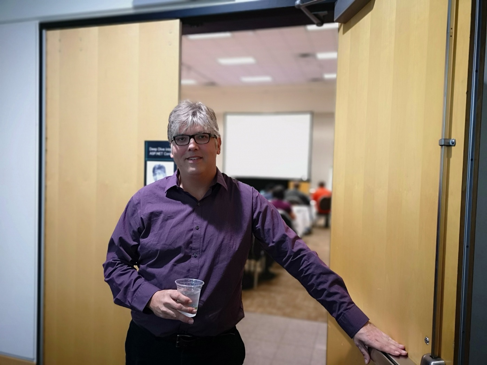
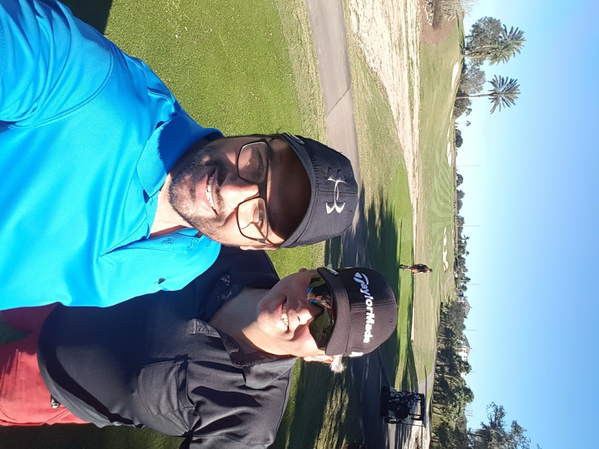
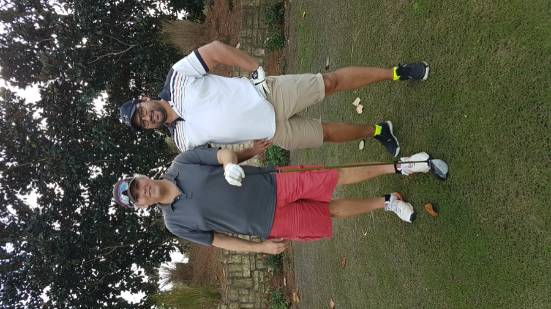

Scott Allen

Scott Allen was a prominent speaker and trainer for NDC Conferences and ProgramUtvikling, and one of the most recognised voices in the .NET and ASP.NET community.
He founded OdeToCode in 2004, joined Pluralsight as a founding author in 2007, and became the platform’s top-performing author of all time, with 54 courses to his name. Alongside the writing and teaching he hosted the Herding Code podcast, served as CTO of Medisolv, and was recognised by Microsoft as a Regional Director.
Loyal to Pluralsight and a favourite on the NDC stage for years, he paired deep technical knowledge with genuine warmth as a teacher — the kind of speaker people would rearrange a schedule to see.
Finding the game again
Scott had played golf growing up, but left the game behind in his adult years.
When I started playing myself in 2013, I invited Scott along — and he fell in love with it all over again. He joined a local club back home in Washington, and from then on we’d always find time for a round, before or after the conference.
In January 2017 I tagged along with Scott and his Washington club on their trip to Florida — still one of my favourite golf memories.


In his spirit
Scott died suddenly in January 2020, at just 50 years old. I promised myself I’d keep up the golf in his honour before the event each year — then Covid arrived, and those plans went on ice.
This tournament is that promise, finally kept. It’s played to honour Scott’s memory, and in his spirit: golf is supposed to be fun, and never too serious.